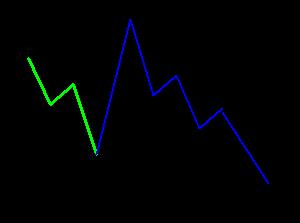
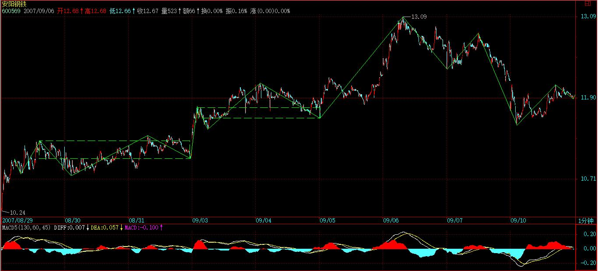

(2007-09-06 22:28:31)
悼念
帕瓦罗蒂
（虽然历史上有太多人比你好，但当代，你是最好的）
声讨
丁毅
（样子丑陋不是错，出来忽悠就不行）
戴玉强
（声音油滑，台风造作，当快男又太老，还是买块豆腐或直接磨墙吧）
范竞马
（本来水平比前两者高多了，一和他们忽悠所谓华人三高，就对你彻底失望）
注意，各位有时候不要太神经质，本ID现在什么新股票都不会买，要搞也只搞原来低位买的。本ID最后一只股票，这里的人都知道，就是002149，在上市第一天买的，当天贴了点成交记录，几小时后删除，后来怎么样，大家都看见了。
【韶山映山红】002149西部材料。2007-08-10上市。】
本ID从来中午就只喝果汁，而且只喝鲜榨的，和任何牌子无关。【韶山映山红】为什么冒出这一么句话？有隐喻还是有故事？有时间搜一下问答看看。★】
本来说好要开新课，【韶山映山红】新课：分型辅助操作。】但看到很多人确实还是没搞清楚，而且，今天本来也不是说股票的，等于占用了别的时间来补这一课。【韶山映山红】2007-09-06这一天是星期四，不是周末，“本来也不是说股票的”？怪。】
线段的划分，就是上面课程里的两种情况，根据这两种情况的完全分类来，没有不能唯一去划分的。【韶山映山红】走势划分有多义性，笔和线段没有多义性，是唯一划分的。】
但一到实际划分，很多人就晕，为什么？因为基本的概念还是没搞清楚。【韶山映山红】有时候只是基本概念的某些关键点不清晰。】
首先，线段和笔，都是有方向的，从顶开始的笔一定结束在底，同样，以向上笔开始的线段一定结束于向上笔，不可能一个线段，开始是向上笔，结束于一个向下笔。由于向上的笔的开始分型是底，而向下笔的结束分型也是底，换言之，一个线段，不可能是从底到底或从顶到顶，这是一个最基本的概念。【韶山映山红】最基本的概念：笔、线段都是有方向的，都是顶底相连。】
同样，正如同一笔不可能出现顶低于底的情况，同一线段中，两端的一顶一底，顶肯定要高于底，【韶山映山红】这里说“两端的一顶一底”，也就是说，中间出现的笔的高低点超出两端的范围了，也不管。这样就让“古怪的线段”合法化了。】如果你划出一个不符合这基本要求的线段，那肯定是划错了。【韶山映山红】K线分型构成笔的时候，顶不能低于底分型区间的上沿，底不能高于顶分型区间的下沿。笔的特征序列的分型构成线段的时候，就不再遵循这个规则了。为什么要有不一样的规则？★可以做个专题，以后研究。】
由于图形不断延续，因此，除非是新股上市后最开始的一段，否则任何一段都是破坏前一段的，如果你的划分，不能保证前面每一段都是被后一段破坏，那么这划分肯定不对。【韶山映山红】新股上市后最开始的一段有三笔重叠就算成立。】
线段的破坏是可以逆时间传递的，也就是说被后线段破坏的线段，一定破坏前线段，如果违反这个原则，那线段的划分一定有问题。【韶山映山红】“被后线段破坏的线段，一定破坏前线段。”这个原则只阐述破坏的传递，而不作为线段是否成立的判断依据。“后线段”、本线段、“前线段”都是成立的线段，才有这样的传递。★可以做个专题，以后研究。】
当然，实际划分中没必要都从上市第一天开始，一般都是从图K线中近期的最高或最低点开始，【韶山映山红】一般都是，也有例外。所以最好是找到一个前后线段都确定成立的地方开始，尤其是大周期图上划分线段。也有时候线段划分会因为“古怪的线段”而绕过了最高最低点，所以不要选择太小的高低点。或者往前看一两个线段。】例如，如果你今天才开始进行划分1分钟图，那么，就可以从昨天下午跳水的最低点5224点开始，【韶山映山红】向前看一两个线段，前面肯定构成线段就行。】
但这样，肯定对大的走势不可能有正确认识，【韶山映山红】“这样”是指“从图K线中近期的最高或最低点开始”划分线段。既然是1分钟级别上选择了一个近期的相对高低点，当然不能要求看长期的大走势。】要对这波行情有明确的分析，即使不从7月6日的3563点开始，也要从8月17日的4646点开始。【韶山映山红】看多大的走势，就拿多大走势的一段来分析。一段走势的起始点是个选择，大的中继也是个选择。】
选择好了开始点，就可以进行分段了。如果熟练了，就可以直接分段，因为分型、笔都可以心算就知道，直接就可以进行分段；但如果不熟练，还是先从分型开始，然后笔，再线段，这样比较稳妥。【韶山映山红】很多时候算都不用算，一路延伸下去就行。有的时候，需要从查看包含关系开始细细的画。】
在实际划分中，会碰到一些古怪的线段。
其实，所谓的古怪，是一点都不古怪，只是一般人心里有一个印象，觉得线段都是一波比一波高或低，很简单那种，其实，线段完全不必要这样。【韶山映山红】所谓的古怪，就是觉得不合理。往往并不是一波比一波高或低的问题，而是最高最低点不是线段的两端点的问题。】
一般来说，在类似单边的走势中，线段都很简单，不会有太复杂的情况，而在震荡中，线段出现所谓古怪的可能性就大增了。【韶山映山红】古怪走势背后的意义是什么？按照规则划分线段，不管古怪笔，就是因为这种古怪只是一时的特殊波动，某些合力想做什么，但是并没有得到市场承认，所以不了了之，所以也就不去管它了。】
所有古怪的线段，都是因为线段出现第一种情况的笔破坏后最终没有在该方向由该笔发展形成线段破坏所造成的，这是线段古怪的唯一原因。因为，如果线段能在该方向出现被线段破坏，那就很正常了，没什么古怪的。【韶山映山红】笔破坏是笔破坏，表现的是启动破坏的力度，是过程。线段破坏是线段破坏，表现的是市场合力的最终选择，是结论。】
注意，这里有一个细节必须注意，线段最终肯定都会被线段破坏，但线段出现笔破坏后最终并不一定在该方向由该笔发展形成线段破坏。【韶山映山红】在该方向由该笔发展形成线段破坏，也就不古怪了。】
由最简单概念知道，任何线段都有方向的，例如线段B，其方向是下，也就是由向下笔开始的线段，那么其结束笔肯定也是向下笔。因此，线段出现第一种情况的笔破坏，这破坏的一笔肯定是向上笔，但这一笔之后，没有形成特征序列的分型，满足不了第一种线段破坏的情况，因此，就在这个方向上形成不了线段的破坏。
而线段，不可能被同方向的线段破坏，任何同方向的线段，或者互相毫无关系，或者就是其中一线段其实是前一线段的延续，也就是说前一线段其实根本没完成。
但线段出现第一种情况的笔破坏后最终没有在该方向由该笔发展形成线段破坏时，在上面例子中的向上破坏笔完成后，接下来肯定是向下的笔，这笔肯定会形成一个向下的线段，否则，就意味着前面那向上破坏笔能延续出线段，这和假设矛盾。
这个向下的线段，如果破了该向上笔的底，那么，原来的线段B就是没结束，在继续延续。这种情况下，如果那向上笔突破线段B的高点，这时候就会出现，线段的开始点并不是最高点的情况。【韶山映山红】线段的开始点还是线段B的开始点，但是低于这个破坏笔形成的高点。】

【韶山映山红】下面是一个向上线段的实例。线段A（1-2-3-4-5-6）被线段B（6-7-8-9）破坏，笔9-10对线段B（6-7-8-9）笔破坏，10低于7，第一种情况，10低于6，但9-10之后的走势没有在9形成特征序列的顶分型，又向上走到了15，满足不了第一种线段破坏的情况，因此,9-10笔破坏向下没有形成线段的破坏，线段B（6-7-8-9）延伸到15，如下图蓝色线所示。这种情况下，向下笔9-10突破线段B（6-7-8-9）的低点6，这时候就出现了线段6-15的开始点6并不是最低点的古怪情况。】
（注意，和这个情况一样，昨天的贴图里，81那点应该在09.05 11:01的5268.74位置上，而82的位置不变，因为原来标记的位置是一个急跌，当时的数据收集可能有点乱，用数据修正功能后发现实际上比09.05 11:01时高，因此必须有此修正。）【韶山映山红】如果81是现在的位置，并且比昨天的位置更低，就出现了“这个向下的线段，如果破了该向上笔的底，”走势A就是前一线段的顺延，等于77课的案例分析就不需要了。现在不管结果怎么样，77课给出的判定标准还是有效的。】
【韶山映山红】这里81点的位置修正有点反复，现在回顾历史，应该是这样的：缠中说禅开始看到前一个底更低，就把81点放在了那里，77课的配图就是这样的。后来发现后一个底更低，就把81点放到了现在看见的位置，两个位置都有缠中说禅博客的原始配图为证。现在恢复当年案发现场的时候，通达信给出的依然是前一个底更低，77课的案例分析依然是必须的。明白这个道理，以及改来改去的原因，就可以理解了。这里沿袭缠中说禅当年留下的图来标注，用文字说明原因，至于历史数据的谁是谁非，就无从考证，也不必计较了。】
【韶山映山红】神燕说，流传很广的土匪版缺失上面缠中说禅括号里的一段文字，就让问题复杂化了。也许是土匪版复制了博客内容之后，缠中说禅又添加了括号里的那段内容。不放心别人整理的东西的完整性，担心别人因为不同的理解而去改动原始的图文，所以我要自己耗费大量的时间整理原始博客，搜集博客正文后面的问答里散落的缠中说禅的回答，自己辛苦的下载通达信一天天的分时成交数据记录，自己整理数据，制作K线图 。严谨、求实是最重要的基础，始终是我们的追求。】
这个向下的线段，如果没破该向上笔的底，那么就可以肯定，由这向上的笔可以延伸出一个线段来，这时候，线段B肯定被破坏了。
注意，这个例子中有一个最关键的前提，就是线段B已经确认线段破坏了他前面的线段，如果线段B对前面线段的破坏都没确认，那就先确认，这里的分析都不适用了。【韶山映山红】80点的破坏是确定的，才有分析81点的可能。】
从这个例子就知道，笔破坏与线段破坏的异同。
对于线段破坏的第二种情况，【韶山映山红】第一种情况的定义就是先有笔破坏，所以只说第二种情况。】例如线段B对线段A是第二种情况，而线段C没有形成第二特征序列的分型又直接新高或新低了，这时候，不能认为这是三个线段，线段A、B、C加起来只能算是一个线段。【韶山映山红】线段C没有实现对线段B的破坏，线段B对线段A破坏的假设也就不成立，假设的三线段不成立，线段A延续，只是一个线段。】
另外，一定要注意，对于第二种情况的第二特征序列的分型判断，必须严格按照包含关系的处理来，这里不存在第一种情况中的假设分界点两边不能进行包含关系处理的要求。【韶山映山红】实际上就是说，开始分析第二特征序列之后，没必要管后面有多少线段，只需要统统做包含处理，考察是否有想要的分型。不管有没有破坏，不管有没有转向，只管寻找分型就是了。】
为什么？因为在第一种情况中，如果分界点两边出现特征序列的包含关系，那证明对原线段转折的力度特别大，那当然不能用包含关系破坏这种力度的呈现。【韶山映山红】71课说的不包含理由是不属于同一性质：“在这假设的转折点前后那两元素，是不存在包含关系的，因为，这两者已经被假设不是同一性质的东西，不一定是同一特征序列的；”这里又换了一套台词，拿破坏力度的呈现说事。★动力学对形态学的影响，可以做个专题，以后研究。】
【韶山映山红】第一种情况，第一特征序列的每一笔都是对原线段的反力，分界点右边的元素更是对原方向的笔破坏。如下图，6为分界点，如果4-5和6-7出现特征序列的包含关系，证明6-7对原线段1-2-3-4-5-6转折的力度特别大，比单纯的跌破4的笔破坏还要大一些，如果适用包含关系，7就要向上回缩到5的位置，6-7向下的破坏的力度被掩盖了，就会导致2-3、6-7、8-9成为错误的顶分型。】
而在第二种情况的第二特征序列中，其方向是和原线段一致，【韶山映山红】第二特征序列元素的方向和原线段的方向一致。】包含关系的出现，就意味着原线段的能量充足，【韶山映山红】包含关系的出现，意味着向原线段方向走得够多，包含处理抹掉一些也不影响，反正要考察的是原线段反方向转折的力度情况。】而第二种情况，本来就意味着对原线段转折的能量不足，【韶山映山红】这里说的是第一特征序列的那个转折，没有笔破坏，所以说“对原线段转折的能量不足”。】这样一来，当然就必须按照包含关系来。
【韶山映山红】在发生笔破坏之前，这样包含处理没有问题。在发生笔破坏的时候，是否应该视为不同性质的东西，停止做包含处理？如下图，算是向下线段的延伸而继续包含处理？还是算第三个线段的破坏而不做包含处理？★可以做个专题，以后研究。】
【韶山映山红】如下图，左边的紫色算是ABC三线段的C破坏B，右边的紫色破坏力度还大一些，反而不算ABC三线段的C破坏B，理由是什么？★可以做个专题，以后研究。】
【韶山映山红】这里不是否认C破坏B，而是不承认B破坏A。因为C的力度足够大，所以视为A的延续，也就否认了B。】
通过上面的讲解，应该没有任何线段问题能难倒各位了，当然前提是能把上面的内容搞明白。
注意，这里必须提醒一句，就是这在以前也曾说过，就是，如果线段中，最高或最低点不是线段的端点，那么，在任何以线段为基础的分析中，例如把线段为基础构成最小级别的中枢等，都可以把该线段标准化为最高低点都在端点。因为，在以线段为基础的分析中，都把线段当成一个没有内部结构的基本部件，所以，只需要关心这线段的实际区间就可以，这样就可以只看其高低点。【韶山映山红】这是一个及其重要的原则，线段划分中有很多最高最低点不在端点的古怪的线段，给人带来的别扭感，让很多人衍生出各种所谓特殊笔之类的处理方法，就是因为他们不知道或者忘记了这个基本理念。】
经过标准化处理后，所有向上线段都是以最低点开始最高点结束，向下线段都是以最高点开始最低点结束，这样，所以线段的连接，就形成一条延续不断、首尾相连的折线，这样，复杂的图形，就会十分地标准化，也为后面的中枢、走势类型等分析提供了最标准且基础的部件。
【韶山映山红】这样的标准化处理，突出了线段的高低点特征，修改了线段转折的时间点特征，是否意味着，价格范围比发生的时间点更重要？★可以做个专题，以后研究。】
【韶山映山红】那些异动被笔、线段过滤的同时，又以最高最低点的方式影响着笔线段划分的结果，是否影响过滤的结果？★可以做个专题，以后研究。】
【韶山映山红】“所有线段的连接，就形成一条延续不断、首尾相连的折线。” 也就是说，虽然线段的内部结构可能级别不同，线段划分还是相当于做了同级别分解的处理。】
(2007-09-07 15:29:09)
今天的准备金本不是大事，但尚老先生的风险提示，可不能说是小事。最近天天报上风险提示，但尚老先生，是力主市场调节的，如果没这老先生，530大概早已不再被提起，因为已经有了更新的被各位口水一番了。
因此，做人要厚道，有人担着，就不能太给脸不是脸的，否则，好人难做，市场调节失效，那就政策调节吧，但对于一些不厚道的垃圾来说，到时候一样会喷粪的。
市场主动调节，那调整就是有限的，是系统可控制的。而市场不主动调节，要人工降雨，那要发生什么，就只有天知道了。
有时候，市场配合一下，那么力主市场调节的分力就更能发挥作用，这点如此显然，但在利益面前，很多人就昏头了，所以，有些事情是人算不如天算，不如不算。
技术上，这里出现一个大一点级别的震荡，那就按中枢震荡来处理，

而不会看的，中线可以关注5周均线，从3600点上来，该线从来没有被触及，这是本段行情是否结束进入较大调整的一个最简单的PH试纸。
个股方面，像000938之类站稳530高位后继续走强的技术形态，会在其他股票上复制，对该股的态度，本ID已经说过多次，唯一需要补充的是，在一个清华比北大牛太多的年代，本ID也只能很经济学地去哈清华了，连清华都不哈，真不想在中国混了？
【韶山映山红】000938紫光股份。站稳530高位后继续走强的技术形态。】
本ID说过的股票，还是要负责到底。600375，在7元时说过，本ID也是那时候进去的，当时的理由已经告诉各位，就是他有新产品，比三一的成本低多了，这是本ID派人实地考察过的，派出的人回来报告说，他连刚进口回来的钢板都亲手摸过了。但这公司，本ID对他信心不大足，就是其关联交易问题。而且很重要的，其一个超大关联公司，由于更多私人利益在里面，实际上接了600375发展起来的，可能最后要有大古怪，那新的玩意，要直接自己上市去实现私人利益的放大。这东西如果按正常直接装到375里，375早该站50元了，但这样搞古怪，这种公司，本ID确实信心不足。
【韶山映山红】600375星马汽车。2012-03-20变更为华菱星马。这一段内容说的是《中国股市前途的大决战》(2007-07-09 15:35:37)的内容。】
不说了，一到周末，本ID就对股票恶心。
下了，各位该干什么是什么，就别股票了。
再见。
(2007-09-08 15:24:51)
自从上周关于现在参与市场就如同在刀锋在走的帖子被点了30几万后，那播放音乐的网站似乎也给点废掉了，总之，这一周来一直都不行，所以音乐会都开不了了，以前上传的也下不来了。
本ID说过，本ID这里真没必要那么多人来，如果你来心情不好、经常上火，还不如不来算了。更无聊的是，人多了，说要让本ID当特邀去进行广告测试的也来了，本ID可不愿意一点就出来一大堆广告，所以还是人少好，人少了，广告也不会来烦本ID，这样大家都清净。
现在必须声明，如果这里那广告联盟一定要把本ID这里塞到他们的联盟里，那可不是本ID的主意，而且本ID也不会接受任何的广告费。但如果这里以后突然被附带了广告，那一定不是本ID搞的，而且本ID也绝对不会从中受益。
天下乌鸦都是乌鸦，去别的地方，以后也一定会有被诸如广告之类的东西骚扰的时候，别人花钱组织了场所，获利也是天经地义的。本ID放弃一切和这博客相关的广告受益权利，不要任何分成，只要不骚扰本ID并能保证博客正常运转就可以。
说到打坐，不可能避免要谈到神鬼、神通之类的玩意。这个问题，并没什么可谈的，特别现代，所谓见神鬼、得神通者，基本都是大话欺世，或者就是神经叨叨，理不明，事岂能明？至于那些断言没有神鬼、神通者，和断言光速不可超一样，都是以一已之臆测测度世界之无穷。
有没有神鬼、神通，如果你没有亲身去实验过，那就请用存疑的态度，别把自己当成上帝，世界的有无还因你的喜好、判断而来不成？
这里，不说有没有神鬼、神通，因为这是需要自己去亲身验证的事情，而且这是有一套如科学实验般可以反复验证的事情，只是你能否达到实验所要求的程度。例如，如果你打坐能达到例如四禅的境界，神鬼、神通的问题就是一个绝对的、如你现在去验证太阳是否存在一样可以直接确认的问题，否则，就如同一个没有眼睛、没有感觉的植物人，你让他如何去验证太阳的存在？
如何去达到四禅的境界？这是一个可以按部就班的严格的实验程序，任何人按照程序，通过时间不等的修行，都可以达到。在古代，别说四禅，就算灭尽定，依然有很多人达到。但在现在，在这样一个物欲横流的时间，找一个达到粗住的人，都不是一件简单事了。
这里只说，假如真有神鬼、神通，那么这究竟是什么玩意？
对于一个不能用嘴吃饭的人，用嘴吃饭一定是最大的神通之一；对于任何人都能随便穿墙过壁的世界，一个竟然不能穿墙过壁的人，一定是最大的神通者之一。我们的世界，分段为食，就算你吃素，那也没什么不同。那么，宇宙中是否存在这样的世界，里面的人是以香味为食的？或者就以思想为食的？那里的人，饿了想一想就饱了？还有的，可能是以各种噩梦为食、以火为食、以精血为食。
还有，我们现在的世界，每个人的身体都是所谓实体的；而在无限的世界中，有些生物，是以想象为身体的、他们有着现在的人类不能想象的各种形象以及构造，他们的身体是气体的、是液体的、是光、是电子流、是负物质、甚至不是由我们这个世界所有的任何基本粒子构成，在他们的世界里，有这自己的物理系统，和我们这里的完全不一样。
好了，关于这些人，站在我们现在人类的角度，他们就是神或者就是鬼，他们的身体、世界可能是物质的，可能是非物质的，可能是非目前我们世界所有具体的物质形态所构成。有一个更重要的问题在于，他们的存在，并不一定就在我们现在的宇宙中，如果你相信所谓的大爆炸，那么他们的宇宙和这所谓大爆炸而来的宇宙根本不是一回事情，但有可能，他们的宇宙在时空层面上和我们目前的宇宙有一种交涉的关系，甚至一种最密切的关系，就是他们的宇宙是我们宇宙的镜像或反镜像。
这里，你可以用尽你的想象力，你甚至可以想象，我们的宇宙有一种机制，这机制的开口处就是一切生物本身，一切生物就是宇宙的出口，通过这生物的死亡，人类可以出口到另一个世界中，而这个出口的机制，暂时并没有被我们的科学所把握，因为他是非物理学的。认为这宇宙的所有秘密一定是物理学的，大概任何最严肃的物理学家，都不会有这种上帝式的狂妄自大。
好了，无论你如何想象，你的神通、神鬼如何怪异，但都离不开一点，就是任何的共有境界，都不过是共业的结果。所神通、神鬼的，不过是能神通、神鬼的共业所成。神通、神鬼，都是过是各自业力所造，业力完了，这戏也完了。
神通、神鬼，没有任何可奇异的地方。神仙的业力完了，神仙也可以成人化鬼。神通的业力耗尽、因缘消散，神通的闹剧也就完了。
世人贪恋神通、神鬼，只不过是偷心不死。至于那些，要通过什么上帝的力量永远天堂，那更是热昏胡话。偷心不死，所以万劫轮回，在生死海中头出头没。
其实，科学就是人的共业，也是人的神通之一。一克药可以同时杀死所有的生物，够神通没有？N个蘑菇可以毁了地球，够神通没有？但没用，就算人类这种蚂蚁N年后爬满整个银河、整个所谓的宇宙，依然摆脱不了其业力。
蚂蚁把自己目力所及的地方看成世界的所有，其实，那可能不过就是一个小土丘；人类把自己目力所及的宇宙看成了一切，其实，那可能不过是一个共业的幻像。
任何追求神通、神鬼的，都不过是偷心不死的闹剧，此理不明，其事必妄。
至于在打坐等过程中，会出现一些所谓的奇异现象，那就更不值得留恋了。而且，这种现象，任何人都会接受到，就如同你的收音机，调到那个频道，就自然有那声音一样。
所有的现象，不离六识。以下现象，本ID在10几前年，都经历过，而一切人，只要走到那个阶段，都会经历的。
例如：
一、空中有些奇怪的物体。
首先要确认你的眼睛没病，眼睛有病，那自然看什么都奇怪。其次，你看这些东西，从根本上不是用眼睛所看，因为，无论挣眼、闭眼，都可以看到。最后，最简单的，你和那些奇怪的东西，是可以进行交流的。
1、一些人物、生命
可能是一个道人、可能是一个古怪的玩意。他可能会停在你的额头前一尺上下的地方。你随时可以看到他，无论你吃饭、睡觉、看电视、玩耍、419等等，那玩意都可能在那里，当然，当你干别的事情的时候，可能不会注意到他，就如同一个花瓶，他可能就在那里，但你并不一定注意他，但你想见就看到了。你有空的时候，你甚至可以和他交流。当然，你和他说话，并不需要真讲出来，你心里问什么，他都会告诉你。
注意，对这种玩意，一定要不理不睬，所谓见魔杀魔、见佛杀佛，一切形貌声色，都不能贪住。特别，这些玩意都有些奇特的地方，绝对不能利用他去干一些事情，这样种下恶因，万世偿债，解脱无期。
2、一些奇异的结构非生命物质
这些物质，其形态绝对不是一般的物质形态，处于有形无形之间。有如太阳形状，中有一如核的反射能量；有如车轮、有如长蛇，形态千奇百怪。这玩意，无论的开眼闭眼，都能看到。同样本质上不是用眼睛看的。开始时，可能只能在有光的地方看到，后来，你能在完全黑暗的地方看到。如果你认这些玩意为实，那么这世界以及你自己就如同幻化一般。
这些玩意，是可以和人本身发生作用的，但一般人对他们只是如刀断水一般。本ID说这些话都不是瞎说的，因为本ID在10几年前，就让他们其中的一个和本ID发生过作用。那天下午，本ID突然有做一个实验的兴趣，当时并不知道有什么结果，下了极大决心，绝对有以死探道的决心。
其中一个玩意，本ID让他从本ID额头中间某位置进入，一进入后，本ID身体里面就如同开始一场核爆炸，首先是一次激烈的放光，那光的亮度，后来在几年之内都印象深刻，然后身体的所有经络系统都被完全激发，本ID就如同被定在那里，一动不动。但脑子异常清晰，任何发生的事情都在清醒状态下的。
后来，这玩意的能量在本ID的身体里顶开无数关节后，就逐步归于平静，本ID才开始能动。这个时间大概是半个多小时的光景，准确时间说不好，因为当时遇到这样的事情，就算本ID的心理承受能力比较强，也顾不上看时间了。
注意，这些玩意，虽然有奇怪的地方，但也没必要去有什么亲密接触，这都不是究竟的地方，闹着玩没问题，但沉迷其中，同样万劫不复。
二、世界仿佛消失一样
上面那些，无论是有生命无生命，都是于世界之中看其形态。但一旦时机成熟，你可以看到世界的另一面。
本ID第一次碰到这种情况，也是10几年的事了。那次是在晚上，本ID正在打坐。这次是先从耳朵开始的，有一股能量（这个词可能不太严格，但没有更好的词了），从很遥远的星际而来，穿越耳朵而过。
然后，全身突然似乎消失一样，眼睛、耳朵、鼻子、身体、以及房间、宇宙，似乎都一下没了，只有一个明晰的意识在那里，整个宇宙都在一种洞彻一切的蓝光之中，这蓝光，不是用眼睛去看的，只是意识的一个直接的反应。而且，那时，意识也完全惊住了，只有那决非世界的蓝光。准确说，蓝光只是一种比喻，不在那种状态，人类的语言根本无非去描述。
本ID后来很久以后写的一首七律里，有一句“琉璃碧净宇无尘”，虽然不是专门写这事情的，但用来比喻那景象，可能会比所谓的蓝光要准确一点。
在那种状态下，没有任何时间、空间，但意识是明确的，但那意识完全不是从脑子作用下的那种意识，因为当时，身体之类的东西完全如没有一样，这意识，完全就是漂浮在这蓝光之中。
这种现象，比有形的东西更有坏处，一旦贪念，就进去了。有形无形、有光无光、净污动静，都不过是翳眼生花。本ID当时是立起正念，坚决不随，慢慢意识才能意识到自己，然后慢慢才从蓝光中摆脱出来，仿佛重新回到世界中一样，然后房子、身体等等重新被形象。
这个过程有一个好处，就是你可以最明晰地经历，你的六识是如何逐步作用的，六识、六根、六尘是如何相续相缠而成的，你的意识与脑的关系是什么，你的眼识与你的视觉系统的关系是什么？这些，绝对不是那些所谓科学实验能够搞清楚的，拿着一个死尸的脑袋去研究人类的意识？测一下所谓的脑电波去研究人类的意识？这连盲人摸象都不如。
注意，上面只是粗略把打坐中开始可能遇到的情况分了三类来说明。这三类情况，都是引你入迷途的。不过，现代人心太软，一般也就玩玩这气动了、那精起了，都在那色壳子里打转转，可能要碰到这三类情况的机会都少。但万一你真碰到了，一定不能贪爱。至于神鬼、神通之流，就更不能贪爱了。
见怪不怪，其怪自败。
(2007-09-09 18:34:12)
破例说两句股票，因为周五有事太匆忙，有些事情可能会有误解。
一、目前的状况，说了N遍，就是泡沫的延续阶段，本ID干的所有事情只有一个目的，让泡沫延续得更长时间。任何有碍于这个目的的，本ID都要尽所能去清除。
二、主动调整，并不会引破泡沫，而是让泡沫更长久、甚至有效缩小的最好良方。泡沫延续的双轮，就是中字头和二、三题材，这在3600点时已经反复说了。注意，中字头只是大型国企的统称，虽然他们多数都带中字。
三、目前的环境，没那水平、没那技术的，本ID早就提醒要先把仓位减少，等市场风险减低后再根据自己的条件继续游戏。留下来的，就要“吃得咸鱼抵得渴”，充分利用好各级别的中枢震荡赚取利润。
四、短线技术，5日均线的有效跌破是否确认，以及5周均线的支持，都是最关键的。就算从纯分型的角度，周K线上，下周有极大可能形成3600点以来第一个顶分型结构，一旦这结构形成，在有效破坏该结构之前，走势都最多只能在较大级别的中枢震荡中进行。
至于像600375之类的股票，本ID对目前的公司没什么信心，并不意味着本ID就要完全放弃，本ID说那些只是把该股目前的真实情况说一次，各人根据自己的实际情况进行操作。没有任何建议是适用于任何人的，对于本ID来说，基本面是可以创造的，当然，只是必须的时候。本ID对这些个股，和目前持有的所有个股，首先不再买入，其次，会利用较大级别震荡降低成本、增加0成本筹码，这方针从来没变。
不说了，各位还是开始消费孔二先生吧。
子曰：君子和而不同；小人同而不和。
杨伯峻：孔子说：“君子用自己的正确意见来纠正别人的错误意见，使一切都作到恰到好处，却不肯盲从附和。小人只是盲从附和，却不肯表示自己的不同意见。”
钱穆：先生说：“君子能相和，但不相同。小人只相同，但不相和。”
李泽厚：孔子说：“君子和谐却不同一，小人同一却不和谐。”
详解：
本章重点，就在于“同”与“和”。“同”，会意字，“冃+口”，“冃”，重复，何谓“同”？就是通过口头上的不断重复达到聚集，当然，这反映着孔子时代的特征，实际上，这口头上的限制并不需要。例如，文化就是一种“同”，文化，从开始的口头传播到现在的网络传播，本质上并没有改变“不断重复达到聚集”的效果；“宗教”更是一种“同”，所谓的教义、教宗等等，就是一种“不断重复达到聚集”的玩意；“科学”一样是“同”，“科学”从本质上是文化、宗教的大汇集，科学相信“不断重复的实验”达到“同一”的效果，是其成立的基础，是科学得以聚集的基础。
总之，文化、科学、宗教等等，以及一切社会结构中的一切玩意，本质上都是“同”，都是“不断重复达到聚集”的玩意。“哲学”之类的玩意，无论唯心、唯物、一元、多元、辨证、诡辩，同样是这样。这一切，本质上都是小人之学，在“人不知”的世界，其学也只能是小人之学。
聚集，本质上都不过为了一己之私利。在资本横行的国家、年代，资本就的最大的“同”，社会上的任何现象、言论，都在“不断重复”达到聚集在资本之“同”的大旗之下，资本社会的人，本质上不过是“资本”的复制，都不过是被“资本”所抽干的行尸走肉，而一切的文化，本质上不过是“资本”的叫春。
“和”，去声，就是“相应”。“天人相应”、“心手相应”，“桴鼓相应”，诸如此类，都是表达了“和”与“相应”。在孔子那里，在君子眼中，只有“天人相应”，却没有所谓“天人合一”的小人之说。注意，这里的相应，超越了海德格尔所说的“应手”，那不过依然在共业的境界之中，而一般人的理解，连海德格尔所说的“应手”都达不到。
人类社会，“地”的一种形态，不过是“天人相应”而成，无所谓“天”，无所谓“人”，“天人相应”而成这人类社会这“地”的特殊形态。天，“地人相应”而成；人，“天地相应”而成；地，“天人相应”而成。成无所成，不过是相续相缠，相应而已。
孔子在本章里，揭示“天地人”结构最重要之一的关系，就是“相应”，就是“和”。就如同音乐中的即兴演奏，这宇宙就在这相续相缠中“和”、“相应” ，这里没有任何需要“不断重复”去达到聚集的。企图通过“不断重复”去聚集点什么玩意、抓住点什么玩意，不过是小人“我”之私心相应之妄想。
而君子之间，也只是相应；君子于所在的时代、社会，所对应的“天地人”结构中，也只是相应。就如同空谷与空谷的对话，可以风雷激荡、可以溪水潺潺，可以幻化出天地间所有的神奇与风景，但却依然只是空谷与空谷的对话，空谷与空谷的相应，如此而已。
缠中说禅白话直译
子曰：君子和而不同；小人同而不和。
孔子说：君子相应而不聚集，小人聚集而不相应。
(2007-09-10 15:58:37)
现在关于风险的提示，级别越来越高，而现在市场里最大的信念是，政策不会制造大幅下跌，因此我们可以继续上涨，无论我们上涨到什么位置，政策都不敢出狠招。市场继续进入530前的怪圈：一方面，由于大盘的做多能量没被耗尽，很多个股还在530高位下徘徊，所以继续上涨的冲动无法消停；另一方面，关于目前市场的判断以及风险的担心，已经在越来越高级别的层次上被明确表达。
由此，明确无误地证明本ID理论中一个最基本的原理，就是走势必然是市场所有当下分力的一个合力呈现。现在的这种情况，就是两种同样强大的分力在互相喷撞。
资金在赌政策不会发飙，这就是目前最大的问题所在。挑战政策底线的后果是什么，18年的中国股市已经一次次呈现过。每一次都有人认为有例外，结果这些人都不存在了，那么，这次如何，就走着瞧。
对于资金面充裕的分力，必然要利用政策面的缝隙去制造行情，无论是整体还是局部的。而游戏政策的结果，往往是被政策所游戏，在这个游戏与反游戏的游戏中，只能用震荡去触及行情塌陷的临界点。而这种行情塌陷，往往呈现非系统性，因此对操作的要求特别高。
现在的行情，具体的操作已经多次声明：
一、水平特差的，就把仓位降低，拿着一些长线品种就算了。
二、水平还可以但看不懂中枢震荡的，就看5日线或5周线，一般来说，只要5周线不破，调整的级别就是有限的。
三、懂得中枢震荡操作节奏的，就按中枢震荡的要求去操作，一般来说，原则是先卖后买，在这些位置，如果你的水平有点问题，卖错了就卖错了，权当把仓位减低。
注意，现在一定是不怕卖错，就怕买错。宁愿卖错，绝不买错。
图形上，76开始的5分钟中枢异常明确了，在该中枢的第三买卖点出现前，中枢震荡将一直延续。
个股方面，前面没怎么动的板块都开始补涨，这是一个明确的信号，就是如果这轮补涨后，前面调整时间比较长的板块没有再次启动，那么大盘的调整不可避免地加大级别，其时间与力度都大为增加。
本周，一定要注意上周高位能否被突破，如果能，那周K线上分型结构不能形成，否则，就是周线上在3600点后第一次出现明确的警示信号。

今天可以回答问题到5点。
[匿名] 新浪网友 2007-09-10 16:01:19
缠姐好！
70课里讲到17－38构成完美1f上涨趋势，其中第二个中枢是32－35，跟贴里也提到第一个中枢是22－27，则整个趋势的划分是：
a+A+b+B+c = (17-22)+(22-27)+(27-32)+(32-35)+(35-38)
这种划分的问题是，a和b都包含一个1f中枢，分别是18-21和28-31。这样a和b都是1f走势类型，与中枢A和B同级，这样组合能成立吗？以前讲的a、b不是应该比A、B级别低吗？
==
为什么一定要有a\b？A+b+B也是一分钟的上涨，关键是两个中枢之间没重合，中枢之前之后有没有走势并不重要。【韶山映山红】这里的问题是确认哪一段是a\b？】
2007-9-10 16:05
[匿名] 新浪网友 2007-09-10 16:03:23
牛市行情即将结束?
==
牛市要至少走20年，结束什么？但牛市里也有调整的，不是一条直线上去的。
2007-9-10 16:06
[匿名] 新浪网友 2007-09-10 16:06:34
601600真的死了吗？
==
短线死而不僵，长线活蹦乱跳。
2007-9-10 16:10
[匿名] 新浪网友 2007-09-10 16:07:05
缠姐前几天说有些票有洁癖，洗来洗去把行情都洗过了，里面是不是有科技龟头同方股份啊？
==
那是对底部说的，同方最多是中继图形，和底部图形的情况不同。
2007-9-10 16:12
[匿名] 新浪网友 2007-09-10 16:09:40
老师节日好！请教一下600569安阳钢铁后期走势如何，可否继续持有！！！谢谢
==
569这种规模的，最终的命运就是被收购，短线只能跟着大盘走了。【韶山映山红】600569安阳钢铁。问答里所说的“甲骨文”就是她。】
2007-9-10 16:13
浆糊 2007-09-10 16:08:11
请缠姐点评一下600737最新出的公告的意思，谢谢
==
没什么意思，737以后的主业也不是番茄。【韶山映山红】600737新疆屯河，2007.03.07中粮屯河，2017.02.17中粮糖业。】
2007-9-10 16:14
[匿名] 蝉蝉 2007-09-10 16:05:32
基金可长期持有吗？
==
说实在，本ID对基金一点信心都没有。
如果投基金，最好就定投指数基金，肯定不会跑输大盘。
一些专投成长性企业的基金，也可以关注，那要考虑基金管理者的水平，这就是碰运气的事情了。
至于那些大而无当的综合性基金，出事是迟早的事情，一个大级别调整，足以出事。
以后肯定有N次暴跌是因为某某大基金出事造成的，银行、证券公司等等都出过大事，基金有例外，你相信吗？
2007-9-10 16:21
[匿名] 天眼 2007-09-10 16:16:44
请问老大,上图分几段,怎样分?
==
如果前面还有走势，那这根本分不了，要看前面的走势。【韶山映山红】假设前面还有走势，如果第一种情况，0-3线段成立。如果第二种情况，3的底分型不成立，还没有形成任何线段，所以“根本分不了”。】如果前面没有任何走势，那就是三段。【韶山映山红】如果前面没有任何走势，就视为第一种情况去分析第一段。】

2007-9-10 16:23
[匿名] 新浪网友 2007-09-10 16:22:54
缠主中铝深深被套中，请问大盘由于政策因素下调，它会被波及到吗？到年底中铝会上100吗？
==
这种思维会害死人的。股票别设定预测的位置，预测是胡扯。
你只需要选择好自己的操作级别，然后根据级别的买点进入。如果你在50元以上才介入，那你肯定只是超短线级别的，那就按超短线级别操作。
知道股票操作中最大的毛病是什么？
就是用一个超短线的买点去期待一个超长线的卖点。
2007-9-10 16:26
赚到 2007-9-10 16:25
缠ＭＭ，自从开始尝试你那意念呼吸后，不到一周，就开始感冒、咳嗽，搞的得挺难受的，后来咳嗽好了，但这几天忽然间身上冒了不少象蚊子叮的包，又红又痒，几天不消。难道这么快就病根发动了？我站着打坐的时间其实很少，只是中午或晚上躺在床上的时候按你说的意念一番，但是往往坚持不了几分钟就睡着了，会这么快就有效果了吗？接下来应该怎么做？要注意什么呢？
==
每个人的根性不同，这些都是一个准备活动，本质上和打坐没什么关系。只是现代人都太脏，无论心理还是生理，本质上，现代人都是病人。所以有些准备活动，把一些脏东西搞出来，给后面留点方便。有反应，如果心里承受不了，就先停停，该看病的看病，把潜在的病诱发出来，并不是坏事。如果心里能承受，那就该怎么是怎么，出点疮算什么？挺过去，自然就好了。坚持不了几分钟，证明宿业甚重，更要加倍努力。消宿业，最好就念佛号，念《心经》也行，否则，光口头上说宿业本空，那你就慢慢空去吧，看到时候是空还是不空。
2007-09-10 16:28:19
[匿名] 一个网友 2007-09-10 16:22:31
我在600779里面被蹂躏得痛不欲生,请缠主给指教一下里面的主力意欲何为?叩谢!
==
这股票里人太乱，有人拿了太多，有人想把他洗出来，就这样了。股票基本面没有任何问题。
2007-9-10 16:29
[匿名] 天眼 2007-09-10 16:16:44

请问老大,上图分几段,怎样分?
==
如果前面还有走势，那这根本分不了，要看前面的走势。如果前面没有任何走势，那就是三段
---------
[匿名] 天眼 2007-09-10 16:28:19
谢谢老大,分03 38 811对?还是第二种05 58 811?【韶山映山红】这里的区别是3-4和5-6朝哪个方向做包含处理。因为是3的底分型，所以向3靠拢，向下包含，而不是包含成5-4。】
==
笔破坏后延伸出线段破坏，所以当然是03 38 811。【韶山映山红】0-1-2-3三笔形成线段，3-4笔破坏，第一种情况。6没有新高，方向不确定，3-4和5-6包含处理成3-6，8高于6，1-2、3-6、7-8构成3的底分型成立。高点4只有一笔不成段，6不是高点，8是高点，假设转折，8-9笔破坏，第一种情况，6-7、8-9、10-11构成8的顶分型成立。

2007-9-10 16:31
[匿名] 新浪网友 2007-09-10 16:30:59
超短线的买点去期待一个超长线的卖点,这的确是问题在的关键,可怎么才能知道是一个值得做长线有买点呢？
==
那你就要看懂本ID的课程，说那么多，不就是告诉如何去找各种级别的买卖点？
2007-9-10 16:32
[匿名] 新浪网友 2007-09-10 16:24:45
请问老大，000915可做长线品种吗？
==
问题不大，但前提是本ID说的时候是3元，都在长线买点的附近，而现在该股，最多就是一个中短线的买卖中，所以，万一大盘有激烈变动，那一个中短线的调整，就有一定风险了。
所以买股票一定要分清楚买卖点，在长线买点介入，然后根据中线震荡把成本降低为0然后继续增加筹码，这样就不会有这种烦恼。
现在介入，就要吃得咸鱼抵得渴。如果你有忽略一切中短震荡的决心，那就没问题。或者，如果你技术不错，那就更没问题，先把筹码弄到手，然后根据震荡把成本降低，这样，什么时候介入问题都不大。
2007-9-10 16:37
[匿名] 新浪网友 2007-09-10 16:29:49
600737已经形成卖点吗？看不懂
==
短线的卖点早过了，
就算你用最粗糙的日线上的顶分型分析，周五的任何一个反弹，只要不过14.28元，都将构成顶分型。【韶山映山红】周五指2007.09.07，顶分型已经形成。】顶分型以后下跌，那还是天经地义的事情。
这股票，主要是最近买的人太多，有人疯了，13.99、13.49连续用4000、5000手买挑逗庄家，庄家不出消息洗就有病了。
该股中长线没有任何问题，现在最大的问题就是盘子有点乱。
2007-9-10 16:41
[匿名] 新浪网友 2007-09-10 16:41:05
神仙姐姐，002149太可怜了，洗得只剩排骨了。
569啥时能回归原来的剧本啊！
==
002149，要跑的60后都早跑掉了。
新股一定要注意节奏，一些新股是先炒一轮，然后下来慢慢洗盘再吸。否则现在的新股，都开得老高，庄家的成本都这么高，让庄家怎么活？等新股真启动时，都还以为庄家的成本就是40、50的，那是脑子有水了？
像002149这种股票，好的庄家，一拉一洗一震，怎么都把成本降到10几去了。就算以后从40、30几地开始启动，你说庄家赢的机会有多大？
2007-9-10 16:47
[匿名] 天眼 2007-09-10 16:34:36
老大,一笔中允不允许存在最高点不是笔的端点?【韶山映山红】线段允许最高最低点不是线段的端点。但是经过标准化处理之后的线段，被改成了最高最低点就是线段的端点。那么，这样算是允许了？还是不许呢？】
==
当然。【韶山映山红】缠师经常这样明确回答，却让人要去猜，到底是当然允许？还是当然不允许？】
顶上如果还有顶，那第一个顶就不是顶。【韶山映山红】笔不用修正，直接就是最高最低。线段有古怪的线段，可能需要修正。】
2007-9-10 16:47
[匿名] 新手无知 2007-09-10 16:43:04
看了一些课程，似懂非懂。请教缠：
1。是不是所有的买卖点的发现都有滞后性？而不是当时（当下）能确定的？---我的理解：买卖点出现在线段的端点，而线段端点的确定需要下一个线段的破坏，那么一旦确认破坏，买卖点肯定已经过去一段时间了。（不知这样理解对吗？）
2.你一直讲你的理论不涉及预测，只关注当下。如果不涉及预测怎么能指导操作呢？比如，买点后必然上涨，卖点后必然下跌，不是预测吗？或者如第一个问题，买卖点只是事后的发现，才说得通呀。
我是新手难免鲁钝，真是困惑难解，请缠开导。
==
请先去研究一下区间套定理，研究明白就没这个问题了。
2007-9-10 16:49
[匿名] 想弄明白 2007-09-10 16:17:51
缠,你上次说,要想尽办法把泡沫行情延续,给人感觉你想让他涨,这次又说风险太大了,我们应先卖后买,到底应如何呀
==
一个是中长线的问题，一个是短线的问题，怎么会搞混在一起？中长线，就是要让这个泡沫行情至少能延伸两年，这就需要行情走得稳健，不引发政策的大规模干预，政策就算不干预，本ID在该干什么的时候自然也要什么，目的只有一个，让行情延伸得越长越好。
短线在中枢震荡中，当然就是先卖后买，这有什么问题？
2007-9-10 16:57
[匿名] 新浪网友 2007-09-10 16:23:28
博主.636一直拿着.可为什么结果却是这样呐?我是新股民,刚刚入市那被您的药所点燃的万丈豪情,全部被浇熄了.新高的股市中,我,更象一个自卑的孩子... ...不是牢骚,只有无奈
==
如果你介入股票是以中长线的态度，那就没必要问这些问题，你只需要去研究一下基本面是否值得继续。【韶山映山红】１，中长线操作的股票，要做选股的工作。就要看基本面。在基本面没有发生变化的情况，买入的理由依然存在，就继续持有。 ２，这里没有提及比价系统，也就意味着，比价关系比基本面更稳定。】
如果是短线介入，那么一个连半年线都没站住的股票，你看他干什么？【韶山映山红】１，言下之意，短线操作的股票，就不看基本面了。 ２，要选那些已经站上半年线的。这是粗略划分是否转折的一个标志。】短时间大幅度下跌的股票，小转大的转折上涨，还没有站上半年线的，有一定的短线操作价值。其他情况的更没有价值。】
本ID介入一只股票，都是要至少持有两年以上的，甚至是天长地久，【韶山映山红】缠师说得更多的，是419，而不是天长地久。】所以，如果你没有本ID的目的，只有短线的目的，就按自己的级别去操作，自然没有这些问题。
本ID多次说过了，想快，就学好第三类买点，那是最快的，操作上只要把握好两点：一、级别不能太小。二、一旦出现向上的盘整背驰一定要出来，不介入那些演化成大级别震荡的情况，只持有中枢上移的情况，一旦新中枢成立，马上走人。
走人，第一卖点看背驰、错过了，第二卖点必须走。
学好这招，所有所谓的短线高手都不会是你的对手了。
2007-9-10 17:03
[匿名] 新浪网友 2007-09-10 16:57:17
看样子600569已经被缠给淘汰了，没有价值了，还是跑吧【韶山映山红】600569安阳钢铁。问答里所说的“甲骨文”就是她。】
==
看看569周五的日分型。本ID所有介入的股票都不会走的，但一定会用震荡减低成本到0后继续增加筹码。


注意，对于散户，根本没必须长期持有一只股票，那是大资金没办法的办法。如果这市场能让本ID这样的资金短线都能杀进杀去，那本ID也不这样玩了，事实上不可能。
所以，对于散户，如果通道畅通的，最快的方法就是用第三类买点去操作，杀完一只继续一只，不断干下去，不参与任何的中枢震荡，只搞最强势的。
这才是散户该干的事情。
当然，如果你没这技术，那就别玩高难度的，就玩简单的，把操作级别弄大点。中枢震荡玩不了，就看5日、5周线，持有到背驰卖点，然后坚决走人，等待新的买点。
2007-9-10 17:09
5点过了，对不起，等一下还有事情。
先下，再见。
2007-9-10 17:10
本课目录
教你炒股票78：继续说线段的划分值得鼓掌的下跌教你打坐7：神鬼、神通、神异景象《论语》详解：给所有曲解孔子的人（69）子曰：君子和而不同；小人同而不和。市场继续进入530前的怪圈